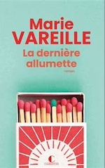
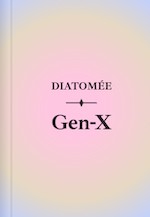

2024
Juillet
- 31 —  💖 La dernière allumette de Marie Vareille
- 11 (édité) — 💖 Les Cosmiques de Diatomée
Juin
Avril
- 20 — À son image de Jérôme Ferrari
- 06 — À la lumière du petit matin d’Agnès Martin-Lugand
- 06 —  Gen-X de Diatomée
Janvier
2023
Novembre
-
19 —
 La nostalgie de l’Ange d’Alice Sebold
La nostalgie de l’Ange d’Alice Sebold
- 19 (édité) — 💖 Pour un garçon de Nick Hornby
-
04 —
Nouvelles de Diatomée


 Entre l’ouvrant et le dormant de la porte, Délicieuse incertitude qui tisse la mesure, Recueil de courts textes
Entre l’ouvrant et le dormant de la porte, Délicieuse incertitude qui tisse la mesure, Recueil de courts textes -
04 —
 💖 Les Cosmiques de Diatomée
💖 Les Cosmiques de Diatomée
Octobre

Septembre
-
17 —
Des thrillers un peu trop hardcores

 Piège de soie (Julie Parsons), Le frère de sang (Éric Giacometti et Jacques Ravenne)
Piège de soie (Julie Parsons), Le frère de sang (Éric Giacometti et Jacques Ravenne) -
02 —
Le premier jour et La première nuit de Marc Levy

 Le premier jour, La première nuit (Marc Levy)
Le premier jour, La première nuit (Marc Levy)
Août


Juillet
-
16 —
 💖 Pour un garçon de Nick Hornby
💖 Pour un garçon de Nick Hornby
-
11 —
 Little Monsters de Kara Thomas
Little Monsters de Kara Thomas
-
08 —
 No et moi de Delphine De Vigan
No et moi de Delphine De Vigan
2022
Novembre

Juillet


Juin


Mai

Mars


Janvier


2021
Décembre
-
29 —
 La construction bioclimatique de Samuel Courgey et Jean-Pierre Oliva
La construction bioclimatique de Samuel Courgey et Jean-Pierre Oliva
-
21 —
 Juste après la fin du monde de Frédéric Lenoir
Juste après la fin du monde de Frédéric Lenoir
Novembre
-
05 —
 Le Piège de la Belle au bois dormant de Mary Higgins Clark et Alafair Burke
Le Piège de la Belle au bois dormant de Mary Higgins Clark et Alafair Burke
-
02 —
 Le bureau des affaires occultes d’Éric Fouassier
Le bureau des affaires occultes d’Éric Fouassier